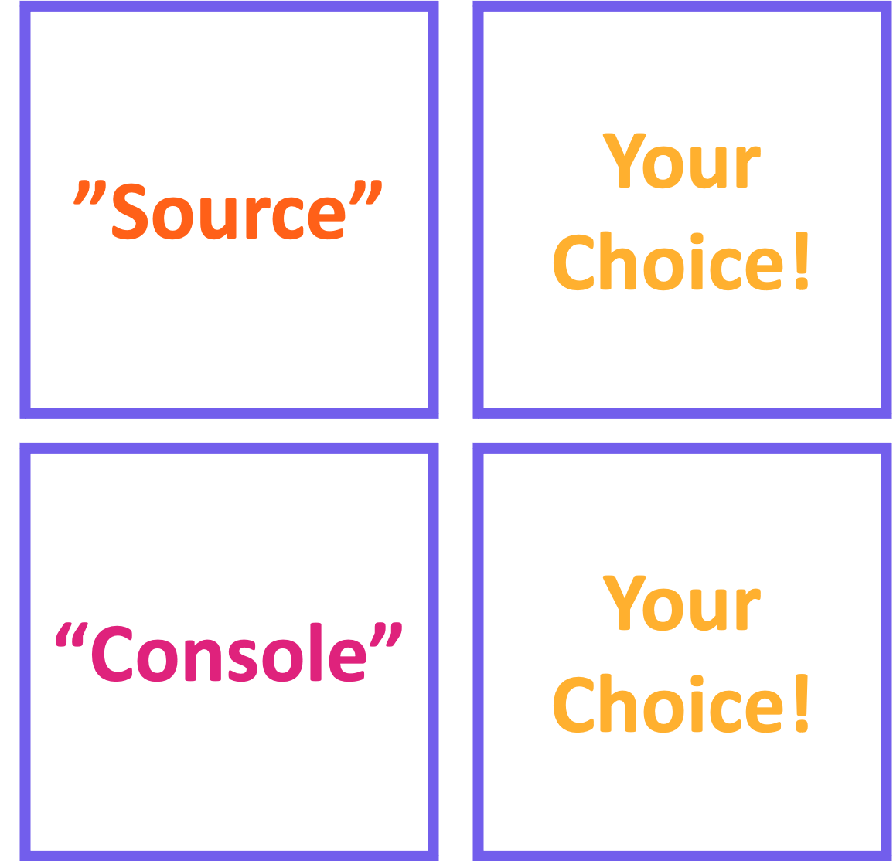

my_obj <- 52Intro to Data Science
Lab 1 – RStudio & Base R
A Guide to Your Process
Scheduling
Learning Objectives
Practice
Supporting Information
Class Discussion
Today’s Plan
- Installation Check (R + RStudio)
- Navigating RStudio
- RStudio Projects
- R Scripts
- “Base” R
Today’s Learning Objectives
After today’s session you will be able to:
- Set up RStudio on your computer
- Create an RStudio Project
- Use R Scripts
- Define fundamental base R terms
- E.g., object, assign, function, arguments, etc.
- Solve simple arithmetic operations using R
Installation Check: R & RStudio
- Did anyone not get R installed?
- Did anyone not get RStudio installed?
- Once you have both installed, please open RStudio
R versus RStudio


R versus RStudio

- Access to fundamental R operations
- Not aesthetically pleasing
- In my opinion
- Faster for very complex operations
- Unlikely to matter for this course!

R versus RStudio

- Access to fundamental R operations
- Not aesthetically pleasing
- In my opinion
- Faster for very complex operations
- Unlikely to matter for this course!

- Access to fundamental R operations
- Allows custom aesthetics
- Has quality-of-life improvements
- Technically an “IDE”
- Integrated Developer Environment
RStudio Layout
- Layout consisting of four panes
- Each pane has tabs that do different things
- You can customize which tabs are in each pane!
- To customize options:
- In top menu, click “Tools”
- Select “Global Options”
- Select “Pane Layout”
- I recommend the following layout:

Practice: Choose Your Colors
- Tools Global Options Appearance
- Look through some of the available color schemes
- Feel free to share the name of your favorites!
- Once you’ve picked one that you’re happy with:
- Click “OK” (in bottom left)
RStudio Projects
- Projects are a special way of marking a folder on your computer for R
- You can still use the folder for other stuff though!
- RStudio will give you benefits if you use Projects
Why Use Projects?
- Sets default location for reading in / saving files
- A.k.a. “importing” and “exporting” files
- Convenient separation among tasks you’re working on!
- RStudio ‘remembers’ which files are a part of each Project
- Even re-opens whatever files you had opened last time you used the Project!
- Lowers risk of mixing up data / script files
Practice: Create a Project
- Make an empty folder on your computer to make the Project in
- In RStudio, click “Project: (None)” in the top right corner
- “New Project…” “Existing Directory” “Browse…” find the folder you made in step 1
- If the name of the folder you made in step 1 shows up in the top right corner of RStudio, it worked!
Temperature Check
How are you Feeling?

R Scripts
- A code file is called a “script”
- Microsoft Word : document – R : script
- Lines of code written in scripts can be re-used
- I.e., “re-run”
- Scripts can be run line-by-line manually or run all at once
- Running all at once = “sourcing” a script
Practice: Create an R Script
- Create an R script
- “File” “New File” “R Script”
- Once created, save it as “316_week1.R”
- “File” “Save”
- Note that the save location defaults to inside of your RStudio Project
- Another reason to use Projects!
Base R Fundamentals
- “Base R” includes a set of core functions that are broadly useful
- Reading in a CSV, taking an average, etc.
- R’s real power comes from “packages” with more advanced functions
- These packages are not in base R
- We’ll begin to cover these next week
- Base R is really useful in its own right!
Objects and Assignment
- You can do math in R directly
- More useful to use “objects” instead of direct values
- object = alias for a value / set of values
- When we create an object we assign some value(s) to the object
- Uses the assignment operator (
<-) - Keyboard shortcut: Alt + hyphen
- Uses the assignment operator (
- After you create an object, you can use it in place of its value!
Object Example
We can make an object like so:
Objects Continued
- Useful because it lets you flexibly code
- If you know that an object only contains numbers, you can do general operations that work for any number
- If you had to use the actual value every time, complex operations would be brutal to code
Running Code
- How do you ‘actually’ run code?
- You have two options!
- Click the “Run” button in the top right of the “Source” pane of RStudio
- Use the keyboard shortcut Command + Return (or for Windows users, Control + Return)
- Note that either option requires that you clicked somewhere in the line you want to run
- Lines are numbered on the left of the “Source” pane
Practice: Object Assignment
Arithmetic
Object Practice
Practice: Object Assignment
Arithmetic
- Calculate 576 / 3
- Calculate (258 * 4) / 13
- Calculate 2 + 2 - 4
Object Practice
Practice: Object Assignment
Arithmetic
- Calculate 576 / 3
- Calculate (258 * 4) / 13
- Calculate 2 + 2 - 4
Object Practice
- Create an object called
yywith a value of 55- Hint: remember to use the assignment operator (
<-)
- Hint: remember to use the assignment operator (
- Create an object called
my_charwith a value of “text”- What happens when you don’t include quotation marks around “text”?
Temperature Check
How are you Feeling?
Code Comments
- Coding languages all allow comments
- Comments are non-coding lines that explain what the code is doing in a human-readable way
- In R, comment lines start with a hashtag (
#)
- Comments allow others to read your code and understand what is happening
- Great for future you!!!
Code Comments

Code Example
Here are some example comments:
- Any questions about comments before we continue?
Practice: Comments
- Add a comment at the top of your script with the course number and your name
- For each line of code you wrote earlier:
- Add a comment line above it explaining what that line does
- Use wording that makes sense to you!
- This lets your class notes be included directly with your code!
- Though you’re of course welcome to take notes (or not) using whatever medium you prefer
Functions
- Programming wouldn’t be useful if you needed to do everything by hand
- Programming languages include functions to avoid arithmetic
- Someone else has done the manual labor and made an object of that process!
- You can then use the function instead of doing the math yourself
- Functions use arguments to let users specify what they can modify
Function Example
- There is a function called
roundthat rounds decimals either up or down
roundhas two arguments:x= the number(s) to rounddigits= the number of digits to which to roundx
- Let’s look at an example
Function Help
- Functions include help files built into R to help you use them!
- Can be accessed by typing a
?and then the function name- E.g.,
?mean
- E.g.,
- Type (and run)
?roundand see what happens
Practice: Functions
- Base R includes an object called
pithat includes the first 6 digits of π
- Using the
roundfunction, roundpito 3 digits
- Consult the help file for the square root function (
sqrt)- What argument(s) does
sqrtexpect?
- What argument(s) does
- What is the square root of pi?
- Don’t forget to add comments to each line in your script!
Vectors and Concatenation
- You can also make objects that contain several values
- This type of object is called a vector
- You can make vectors using “concatenation”
- [con-CAT-eh-nation]
- R does this with the
cfunction- You need commas between each element of a vector
- E.g.,
my_vector <- c(1, 2, 3, 4)
Object Classes
- Objects have a class that dictates what operations they support
- Math can only be done on “numeric” objects
- Text can be stored in “character” objects
- But math can’t be done on characters!
- You can check an object’s current class with the
classfunction- E.g.,
class(my_object)
- E.g.,
Object Classes Cont.
- There are many classes
- Most of which are beyond the scope of this class
- Let’s focus on 3 fundamental classes
- Numeric = numbers
- Character = text
- Factor = text but defines categorical groups
Class Coercion
- You can force (a.k.a. coerce) an object from one class to another
- The simplest functions to do this are all
as.<desired class>()- E.g.,
as.numeric()
- E.g.,
- Want to have your code treat a number like text?
my_text <- as.character(111)
- What happens when you try to force text into a number?
my_num <- as.numeric("hello")
Practice: Concatenation & Classes
- Concatenate the numbers 1, 4, 9, and 6 into a vector
- Hint: remember the
cfunction!
- Hint: remember the
- What is the class of that vector?
- Concatenate “hello”, “world”, and the first vector into a new vector
- What is the class of the new vector?
- Multiply the second vector by 16; what does this return?
Temperature Check
How are you Feeling?
Upcoming Due Dates
Due before lecture
(By midnight)
- Homework #1
- Read the British Ecological Society’s Reproducible Code Guide (p.1-12)
Due before lab
(By midnight)
- Muddiest Point #2
- Read the British Ecological Society’s Reproducible Code Guide (p.20-25)